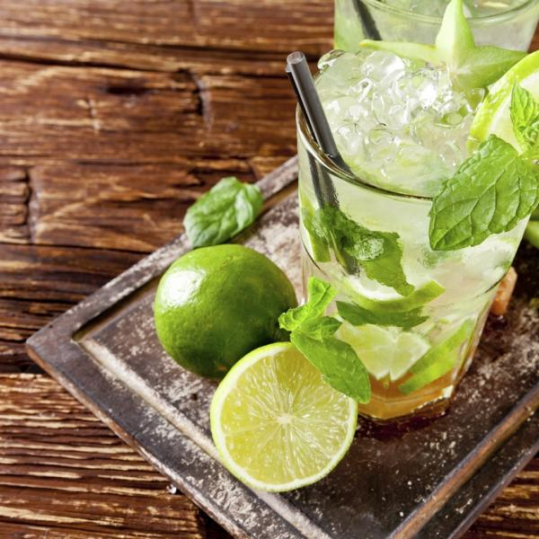

MOJITO

DESCRIPTION
This Mr.Gallochapaval's recipe for a classic mojito, with all the flavors of the Caribe
INGREDIENTS
- 2oz - Zacapa 12 Rum or White Havana Rum
- 1oz - Freshly squeezed lemon juice
- 1 - Lemon
- 2tbsp - Brown sugar
- Club soda
- Fresh mint
- Ice
STEPS
- Place the Freshly squeezed lemon juice, the Brown sugar, and the Fresh mint inside a Highball glass.
- Using a Cocktail Muddler firmly press on the mixture, twisting a little to mash the ingredients together. (*NOTE: if you dont have a muddler, the back of a wooden spoon would do the job)
- Add the Ice all the way to the top!
- Add some Lemon Slices as well as some unmashed Mint Leaves as a garnish
- Pour the 2oz of Rum...hopefully you chose the Zacapa 12!!!
- Fill with the Club Soda and enjoy!